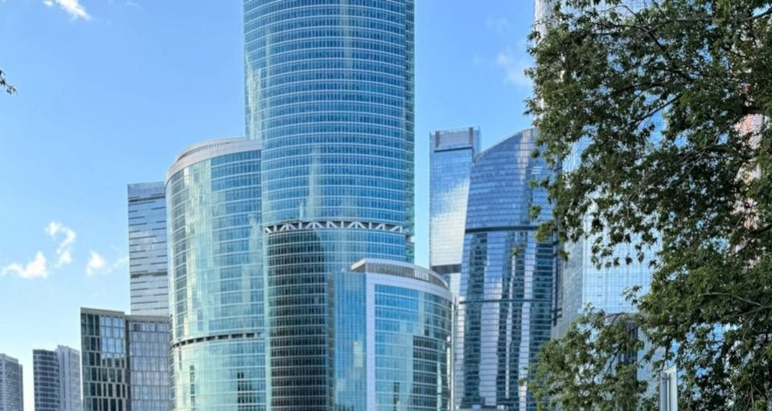
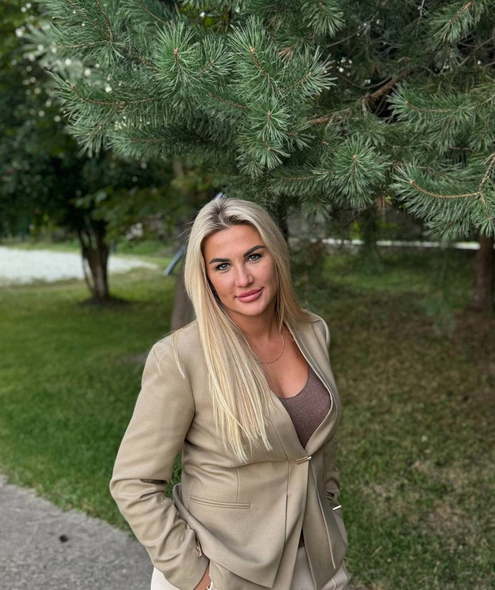
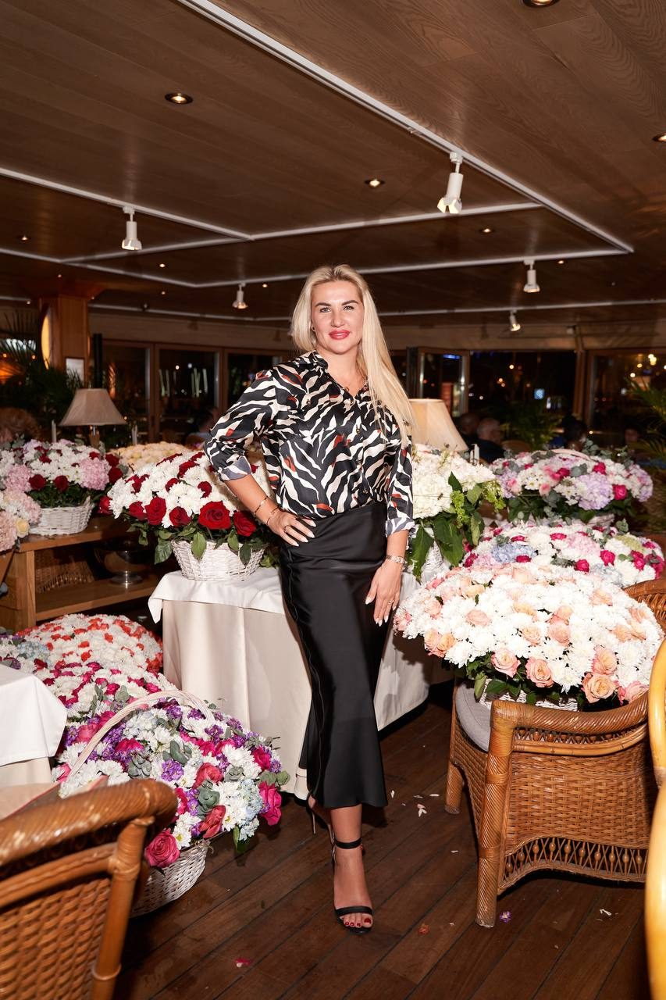
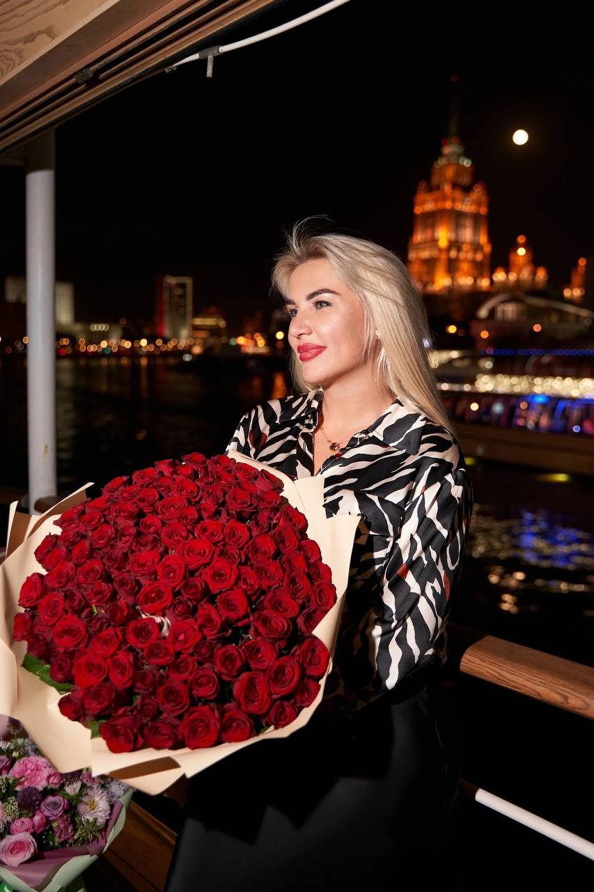

Это же дно. Ты красивая, умная. Ты можешь больше.
Знакомая обиделась на эти слова. Мы долго не общались.
Через время она вернулась: «После того разговора я всё поменяла».

15 лет руководила людьми и стройками, построила четыре бизнеса и многое прошла сама. Помогаю разобраться в отношениях, работе и себе. И найти своё место.

Юлия Павлова15 лет руковожу людьми и стройками. 4 своих бизнеса. Команда до 70 человек.Вопросы, которые страшно задать вслух. Чаще всего про отношения и про себя. Без шаблонов и чужих правил.
Я сама себя сделала. Почему я одна?
Сила и независимость не отменяют желания быть любимой. Разбираем, что на самом деле стоит между вами и отношениями. И уходить ли, если всё кажется плохим.
Для сильных и независимых и для тех, кто на перепутьеРазобрать мой вопросПочему я себе не нравлюсь?
По тому, как человек говорит и реагирует, видно, чего он боится. Находим страхи, которые ведут, и красоту, которую вы прячете за чужими правилами.
Для тех, кто прячет себя или устал подстраиватьсяРазобрать мой вопросУйти в своё дело или остаться?
Потолок в найме, сложный руководитель, выбор между бизнесами. Говорю из 15 лет управления и четырёх собственных бизнесов.
Для женщин в найме и руководителейРазобрать мой вопросДля чего я вообще здесь?
Кто-то счастлив дома с детьми, кто-то на должности. Важно, чтобы это был ваш выбор, а не чужой сценарий. Помогаю увидеть своё.
Тем, кто ищет своёРазобрать мой вопросСтрахи, «надо», чужие правила и мамины слова: это шум. Под ним всегда есть суть. Я помогаю её увидеть.
Разобрать мою ситуациюЕщё студенткой я сказала декану, что буду работать в крупнейшей нефтяной компании. Все засмеялись. Декан не засмеялся. Так и вышло.
Мне говорили «повезло». А я год искала квартиру мечты: в обед бегала на просмотры, ночами листала объявления. И сказала хозяину: «Это моя квартира».
Я руководила командой из семидесяти человек. На мой день рождения они заказали мой портрет. Без людей я ничто: мои люди делают меня. Поэтому я умею видеть в каждом то, что он сам в себе не замечает.
Сначала смотрю на фундамент, потом обсуждаем отделку. Так я привыкла на стройке, так работаю и с людьми.
Познакомиться личноИстории людей, с которыми я говорила. Имена и детали изменены.
Это же дно. Ты красивая, умная. Ты можешь больше.
Знакомая обиделась на эти слова. Мы долго не общались.
Я хочу развестись. Всё плохо.
Она пришла с этим запросом и уверенностью, что дело в муже.
Заберите нас с собой.
Так до сих пор пишут люди, которыми я руководила.
Истории рассказаны с согласия, имена и детали изменены. Решения в каждой из них человек принимал сам.
Я проверила это на себе.
То, что другие боятся сказать. Сначала бывает обидно, потом становится легче.
Нет правильного способа быть женщиной. Та, что печёт пироги, не хуже той, что на должности. Просто у неё своё.
Стена из «мне никто не нужен» защищает, но не греет.
Готовых рецептов не даю: то, что спасёт одну, навредит другой.
Уступать можно, терять достоинство нельзя. И не каждую войну нужно выигрывать.
Не читаю мораль и не говорю «надо». Показываю, что вижу, и помогаю принять решение, за которое потом не стыдно.
Один вопрос, одна встреча. Ответ и понятный следующий шаг.
Цену назову в ответ на сообщениеКогда одной мало. Я уже знаю вас, поэтому на каждой сразу переходим к делу.
Цену назову в ответ на сообщениеДля больших перемен: уверенность, работа, отношения. Между встречами есть время попробовать.
Цену назову в ответ на сообщение
Несколько дней в женской компании вдали от города: разговоры, тишина и своё.
Узнать первойКоротко описываете ситуацию и вопрос. Выбираем формат и удобное время: вечер или выходные.
Разбираем ситуацию честно и по делу. Строго по времени, без воды.
Уходите с ясной картиной и следующими шагами.
Нет. Я практик с большим жизненным опытом: руководитель, предприниматель, женщина, которая многое прошла сама. Я вижу суть ситуации и помогаю её разрешить.
Чаще всего с отношениями и вопросом «что со мной не так». Разбираем и работу, деньги, выбор между наймом и своим делом: здесь у меня 15 лет практики.
Потому что жизнь у каждой своя. Сначала разбираемся в вашей ситуации, потом ищем решение.
Цену назову в ответ на сообщение: она зависит от формата. Напишите, с чем вы пришли, и я предложу подходящий вариант.
Напишите мне в Telegram или Instagram, отвечаю сама. Внизу страницы можно выбрать тему и формат, и первое сообщение соберётся само. Встречи онлайн или лично, по вечерам или в выходные.
Честно. Без грубости, но и без сахара: так быстрее доходим до сути.
Если нужна та, кто скажет «ты во всём права», это не ко мне. Если тяжёлое состояние или горе, сначала к врачу или психотерапевту: я их не заменяю.
Нет. И никто честный не гарантирует. Я помогаю увидеть ситуацию ясно. Дальше вы действуете сами.
Ретрит: несколько дней в женской компании вдали от города. Каждая берёт то, что нужно именно ей.

Напишите в личные сообщения, отвечаю сама. Не знаете, с чего начать? Выберите тему, и первое сообщение готово.